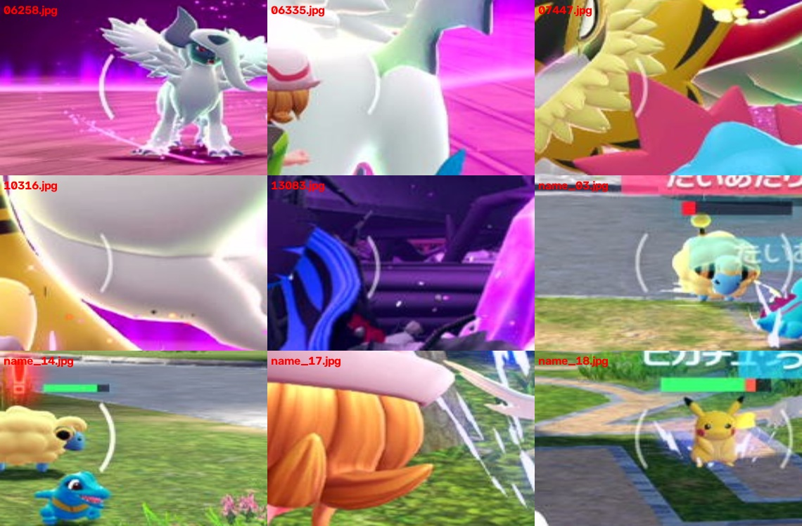

2026-10-26 / LocalFunction・ZA_story実装 / 保存画像と入力を模擬した検証
対象はコフキムシの18/18_2、メリープの20、ピカチュウのTOWER_36。補足判定モードと他の捕獲は従来動作を維持する。
LocalFunction/LockOnDetection.py に集約。関数はカメラ・GUI・ゲーム入力を持たず、1280×720のBGR原画像を受け取る。
from Commands.PythonCommands.LocalFunction.LockOnDetection import detect_pokemon_name
detail = detect_pokemon_name(
frame, expected="mareep", template_dir=name_image_directory,
candidate_names=("mareep", "pikachu", "scatterbug"),
threshold=0.82, margin=0.08,
)
matched = detail["matched"]識別子ごとに 名前.png と 名前_mask.png を用意する。白255=比較、黒0=無視。文字だけを白く残すのではなく、縁・穴・周囲2pxも含める。候補リストと画像を差し替えて他の名称へ流用できる。
detect_capture_name() は今回の3種の簡易ラッパー。結果には候補スコア・次点との差・名前とHPバーの座標・不一致理由が入る。手塗りは既存の TemplateMaskEditor.py を使う。
| 名称 | 別フレームの一致度 | 次点との差 |
|---|---|---|
| メリープ | 0.9617 | 0.6876 |
| コフキムシ | 0.9762 | 0.6221 |
| ピカチュウ | 0.8924 | 0.6408 |
3正例と6通りの別名判定を確認。白い面、名称の遮蔽、HPバーなし、手持ちHUD、同名2体、異なる2名の同時表示は拒否する。
元の692枚の保存画像の監査ではピカチュウ名のある454/456の2枚だけ一致。456は参照画像そのものなので、独立検証の正例には数えない。別名同時表示の拒否を追加した最終版でもこの2枚を確認する。
輪郭は56枚を調査し、9枚で検知位置を目視照合。明るいマーカーと暗いmega戦のマーカーを2段階の明るさで抽出し、曲率・太さ・当てはめ誤差は共通の条件で検査する。これは検知率・見落とし率の母数を揃えた評価ではない。

図は観測位置の確認用。実行時に図の拡大画像を使わない。
メリープとコフキムシは同じ録画内の近い時刻を参照・検証に使った。元動画のゲーム領域は横768pxに縮小されており、1280pxへ戻している。ピカチュウはZIPにある原寸の別フレーム。未見の実機場面に対する精度を保証する結果ではない。
日本語・1280×720用。長い遮蔽、薄い弧、極端に短いHPバー、別言語や倍率は見落とし得る。未確認ならGETを抑止するため、現場で画像を追加して調整できる。
稼働中のCommandsへのStop/F5、PokeCon再起動、実camera取得、ゲーム入力は行っていない。実際の入力・表示FPSも未検証。Commands停止中にF5で更新を読み込む。FPS修正完了とは扱わない。
最終版の関連54件と、捕獲Stepの既存9件は成功。必須全体は878件、21 failures / 8 errors / 1 skip。既知27診断に加わった時間依存の2件は単独再実行で成功した。全体成功ではない。全体試験中の最終調整後、変更に関係する63件を再確認した。
Origin、stock、配布コードZIP、テンプレートZIP、clean DevStudio文書と共通断片へ同期。対象外の関数ASTとZIP内の他ファイルを保持した。
.venv314\Scripts\python.exe -B -m unittest tests.test_lockon_detection .venv314\Scripts\python.exe -B reports/lockon_detection_20261026/reproduce.py # 保存済み692枚も再確認する場合 .venv314\Scripts\python.exe -B reports/lockon_detection_20261026/reproduce.py --audit-zip D:/Recording/Switch_No3.zip
出典・切出し・SHA256 / 名称の検証値 / 692枚の監査 / 輪郭56枚 / 配布整合 / テスト結果
技術資料：OpenCVテンプレート比較、OpenCV輪郭処理。本実装は単色への誤一致を避ける選択画素のZNCCと、弧の当てはめ検査を使う。